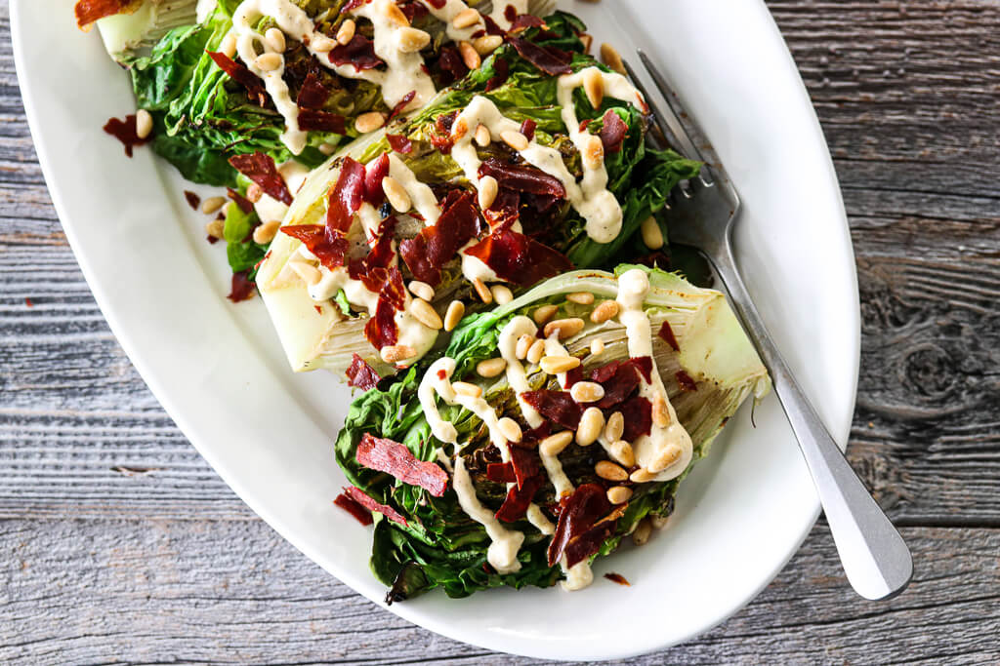

Middag oppskrifter
GRILLET HJERTESALAT MED PARMESANDRESSING OG PARMACHIPS

Norsk hjertesalat er frisk og sprø, og med sin litt søtlige smak er den perfekt å legge på grillen.
Som tilbehør serverer jeg parmesandressing, sprø parmachips og ristede pinjekjerner, en nydelig
kombo! Nyt den alene som forrett
eller smårett, eller server den som tilbehør til annen grillmat.
INGREDIENSER
PARMESANDRESSING
75 g majones
2 ss melk
1 fedd hvitløk
25 g parmesan, finrevet
1-1 1/2 ss dijon sennep
1/2-1 ss sitronsaft
pepper
HJERTESALAT & TILBEHØR
2 hjertesalat
nøytral olje
4 skiver parmaskinke
2 ss pinjekjerner
3-4 ss extra virigin olivenolje
flaksalt
SLIK GJØR DU
Sett stekeovnen på 200 grader, over- og undervarme. Fordel skinkeskivene på et bakepapirkledd
bakebrett og stek dem midt i ovnen i ca. 10 minutter, til de skifter farge og er sprø. Følg med mot
slutten av steketiden. Knekk dem opp
i mindre biter og legg på en tallerken.
Rist pinjekjernene i tørr stekepanne, til de er gylne.
Rør sammen ingrediensene til parmesandressingen. Smak til med sennep, sitron og nykvernet
sort pepper.